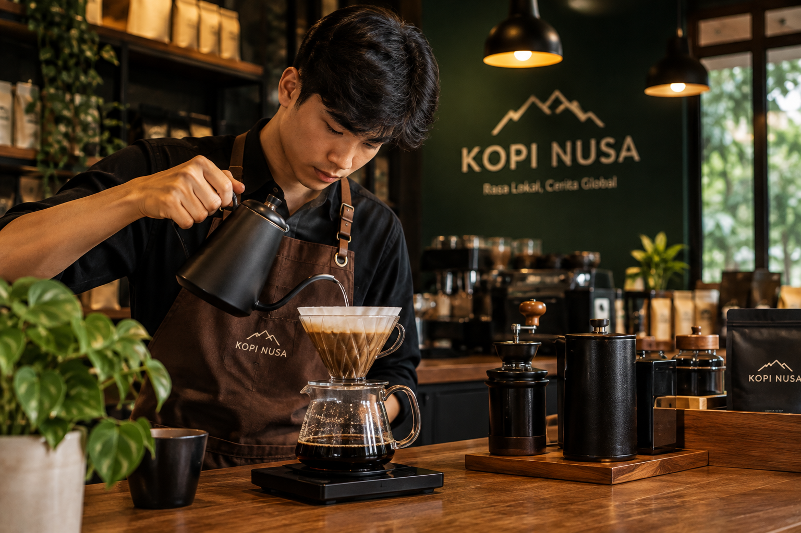
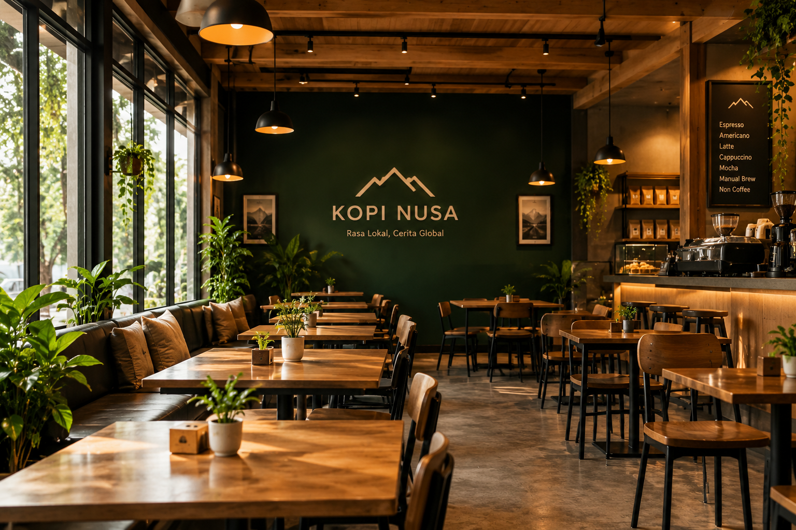
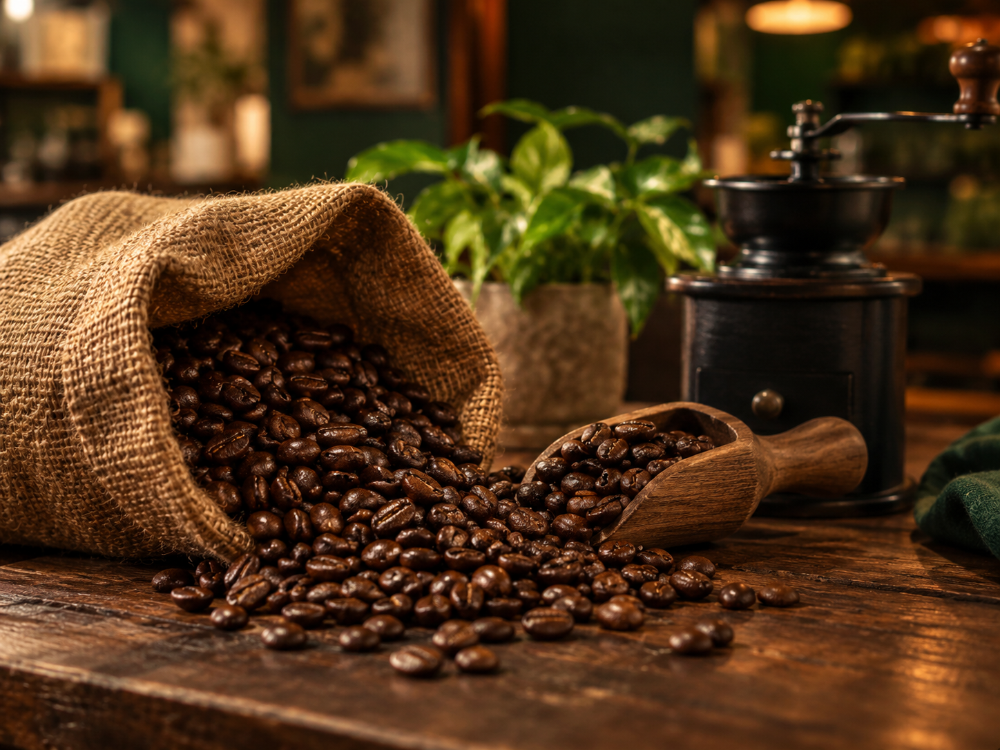

Setiap cangkir kopi disiapkan dengan teliti untuk menjaga cita rasa terbaik.
Lihat proses pembuatan kopi dan suasana yang ada di kedai Kopi Nusa.

Setiap cangkir kopi disiapkan dengan teliti untuk menjaga cita rasa terbaik.

Tempat yang nyaman untuk menikmati kopi dan bersantai.

Bahan baku berkualitas menjadi bagian penting dalam menghasilkan rasa kopi yang khas.
Dengarkan suasana santai sambil menikmati cerita kopi dari Kopi Nusa.